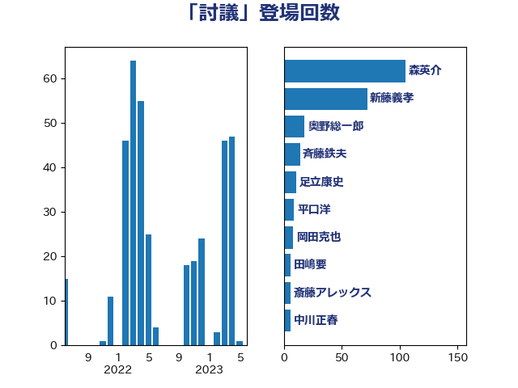

単語「討議」

| 森英介 | 自由民主党 | 105 回 |
| 新藤義孝 | 自由民主党 | 72 回 |
| 奥野総一郎 | 立憲民主党 | 18 回 |
| 斉藤鉄夫 | 公明党 | 14 回 |
| 足立康史 | 日本維新の会 | 11 回 |
| 平口洋 | 自由民主党 | 9 回 |
| 岡田克也 | 立憲民主党 | 8 回 |
| 田嶋要 | 立憲民主党 | 6 回 |
| 斎藤アレックス | 国民民主党 | 6 回 |
| 中川正春 | 立憲民主党 | 6 回 |
| 國重徹 | 公明党 | 5 回 |
| 石破茂 | 自由民主党 | 4 回 |
| 浜田聡 | NHK党 | 4 回 |
| 松本洋平 | 自由民主党 | 4 回 |
| 小西洋之 | 立憲民主党 | 4 回 |
| 北側一雄 | 公明党 | 3 回 |
| 馬場伸幸 | 日本維新の会 | 2 回 |
| 青柳仁士 | 日本維新の会 | 2 回 |
| 階猛 | 立憲民主党 | 2 回 |
| 赤嶺政賢 | 日本共産党 | 2 回 |
| 船田元 | 自由民主党 | 2 回 |
| 源馬謙太郎 | 立憲民主党 | 2 回 |
| 永岡桂子 | 自由民主党 | 2 回 |
| 櫻井周 | 立憲民主党 | 2 回 |
| 山本剛正 | 日本維新の会 | 2 回 |
| 寺田稔 | 自由民主党 | 2 回 |
| 寺田学 | 立憲民主党 | 2 回 |
| 大塚耕平 | 国民民主党 | 2 回 |
| 鶴保庸介 | 自由民主党 | 1 回 |
| 高木かおり | 日本維新の会 | 1 回 |
| 高市早苗 | 自由民主党 | 1 回 |
| 阿部知子 | 立憲民主党 | 1 回 |
| 鈴木敦 | 国民民主党 | 1 回 |
| 金城泰邦 | 公明党 | 1 回 |
| 野田佳彦 | 立憲民主党 | 1 回 |
| 道下大樹 | 立憲民主党 | 1 回 |
| 赤羽一嘉 | 公明党 | 1 回 |
| 葉梨康弘 | 自由民主党 | 1 回 |
| 米山隆一 | 立憲民主党 | 1 回 |
| 礒崎哲史 | 国民民主党 | 1 回 |
| 石井正弘 | 自由民主党 | 1 回 |
| 田村貴昭 | 日本共産党 | 1 回 |
| 田村憲久 | 自由民主党 | 1 回 |
| 渡海紀三朗 | 自由民主党 | 1 回 |
| 浜野喜史 | 国民民主党 | 1 回 |
| 沢田良 | 日本維新の会 | 1 回 |
| 柴田巧 | 日本維新の会 | 1 回 |
| 林芳正 | 自由民主党 | 1 回 |
| 松沢成文 | 日本維新の会 | 1 回 |
| 杉本和巳 | 日本維新の会 | 1 回 |
| 本庄知史 | 立憲民主党 | 1 回 |
| 市村浩一郎 | 日本維新の会 | 1 回 |
| 岩谷良平 | 日本維新の会 | 1 回 |
| 小倉將信 | 自由民主党 | 1 回 |
| 太栄志 | 立憲民主党 | 1 回 |
| 塩谷立 | 自由民主党 | 1 回 |
| 塩川鉄也 | 日本共産党 | 1 回 |
| 古賀之士 | 立憲民主党 | 1 回 |
| 北神圭朗 | 無所属 | 1 回 |
| 務台俊介 | 自由民主党 | 1 回 |
| 加藤勝信 | 自由民主党 | 1 回 |
| 中野洋昌 | 公明党 | 1 回 |
| 三木圭恵 | 日本維新の会 | 1 回 |